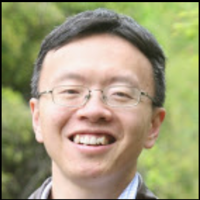
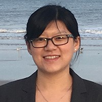
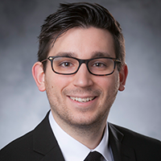
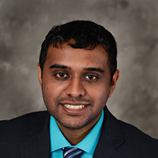
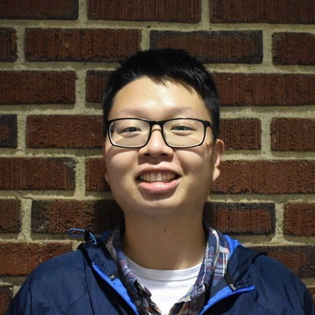
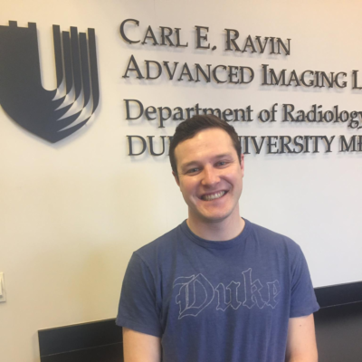

People
Faculty Members
 |
Ehsan Samei, PhD, DABR, FAAPM, FSPIE, FAIMBE Chief, Duke Clinical Imaging Physics Group Director, Medical Physics Graduate Program Director, Imaging Physics Residency Program Professor, Departments of Radiology, Physics, Biomedical Engineering, Electrical and Computer Engineering |
 |
Anuj J. Kapadia, PhD Director of Graduate Studies, Medical Physics Graduate Program Assistant Professor, Department of Radiology |
 |
W. Paul Segars, PhD Associate Professor, Departments of Radiology and Biomedical Engineering | Google Scholar | MyNCBI | Radiology Profile | Duke OLV | Dr. Segars is an associate professor of radiology and biomedical engineering, a faculty member in the medical physics graduate program, and a member of the Carl E. Ravin Advanced Imaging Laboratories (RAILabs) at Duke University. His research involves the development of computer-based simulation tools for medical imaging research including realistic anatomical and physiological models or phantoms that serve as virtual subjects to evaluate and improve imaging devices and techniques. |
Research Staff
 |
Brian Harrawood Brian is a research associate in Samei Lab |
 |
Francesco Ria, DMP, MS | Research Gate | CV | Hello, I am Francesco Ria, Doctor of Medical Physics, Master in Astroparticle physics, Professional Doctorate in Marketing and Management, and professional Journalist. I am currently working in research in: image quality reference levels definition in CT, phantom image quality prediction, and radiation risk metrics evaluation and definition. In the past I also worked in radiation therapy (Cyberknife©) and in radiopharmaceuticals (cyclotron manager). I have learned that, sometimes, a problem's solution is not in a book, but instead in a night with wine and blues. If you play soccer, be warned: I could be your next referee and my southern Italian blood does not react well to argument…unless we are sharing a beer: it is the circle of life. |
 |
Davood Karimi, PhD Davood is a postdoctoral research associate in Samei Lab |
Graduate Students
 |
Ehsan Abadi, MS | Google Scholar | Research Gate | Ehsan Abadi got his B.Sc. and M.Sc. degrees in Electrical Engineering and Biomedical Engineering at the University of Tehran. He is currently a PhD candidate in Electrical Engineering and a graduate research assistant in Carl E. Ravin Advanced Imaging Laboratories at Duke University. His main research interests are computational phantom modeling, medical imaging simulations, image processing, and machine learning. |
|  | Yuan Cheng, PhD | Research Gate | Yuan Cheng is a rising second year Master's student in the Medical Physics Program. He has a PhD in Physics from the University of North Carolina at Chapel Hill before coming to Duke. He is interested in applying artificial intelligence to advance the efficacy of diagnostic imaging. His current research project involve the calibration of the CT image quality metrics assessed by automated algorithms developed at Dr. Samei's lab with clinical metrics (such as preference of radiologists). |
|  | Wanyi Fu, MS | Google Scholar | CV | Wanyi is a Ph.D. student in the Duke RAIlabs, advised by Prof. Ehsan Samei. Her research interests are medical imaging and image analysis. Wanyi’s work focuses on developing tools for clinical patient-informed imaging dosimetry and quality. She received her M.S. from Duke University in 2016, and B.E. from the University of Minnesota, Twin Cities, and Beijing Jiaotong University in 2014. |
 |
Jocelyn M. Hoye | Google Scholar | Research Gate | Jocelyn is a Medical Physics PhD student researching radiomics, quantitative imaging, machine learning, and radiation dosimetry in x-ray-based imaging. The goal of her dissertation project is to use quantitative features measured from Computed Tomography images to predict patient response to lung cancer therapy. She received her Bachelor of Science in Physics and Mathematics from Bates College in Lewiston, Maine in 2015. She is a Massachusetts native and enjoys hiking, eating, and fitness classes. |
|  | Thomas J. Sauer, MS | Google Scholar | T.J. is a Ph.D. student in the Medical Physics program primarily researching computational lesion and liver modeling. He has been a member of RAILabs since 2016. Prior to becoming a Ph.D. student, he received his MS in Medical Physics from Duke University in 2017 and BS in Physics from John Carroll University in 2015. In his spare time, he enjoys oil painting and working as a therapy dog handler. |
|  | Jayasai Rajagopal | Google Scholar | Jayasai Rajagopal is a Medical Physics PhD student studying the applications of photon-counting CT. His research is being conducted as a joint venture between RAILabs and the NIH Clinical Center. He recieved his BA in Mathematics from the University of Chicago in 2016. From Ohio, he enjoys gaming, playing basketball and reading in his spare time. |
|  | Hananiel Setiawan | Google Scholar | Research Gate | Personal Web/CV | Originally from Indonesia, Han recently joined the Samei group as a first year Medical Physics PhD student. He is currently starting his new project in CT contrast imaging optimization. Han received his bachelor’s degree in Physics from Michigan State University and is also a proud Lansing Community College graduate. Outside of academics, Han enjoys singing with the Duke University Chapel Choir and playing the pipe organ. |
 |
Shohbit Sharma | Google Scholar | Research Gate | Shohbit is a PhD student in Samei lab |
|  | Taylor B. Smith | Research Gate | Taylor is a Medical Physics PhD student working on ways to assess the quality of x-ray-based medical imaging. His current research focuses on the development and application of novel metrics of medical image quality which are clinically-focused and measured directly from patient images. Born in New Jersey, he received his B.S. in Physics from Rutgers University in 2015. He loves listening to and talking about music, playing sports, and making homemade pasta. |